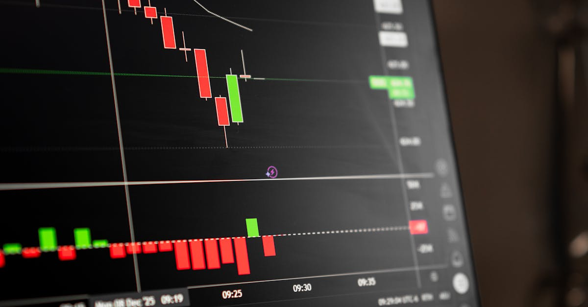

Liberty Global dévoile ses ambitions pour Ziggo Group
La nouvelle a fait l'effet d'une petite onde de choc sur les marchés financiers : Liberty Global, le géant des télécommunications, a récemment levé le voile sur des perspectives financières particulièrement attrayantes pour sa filiale néerlandaise, Ziggo Group. L'annonce clé concerne la projection d'un free cash flow (FCF) de 500 millions d'euros d'ici 2028. Cette feuille de route ambitieuse, présentée lors d'un événement dédié aux investisseurs, témoigne de la confiance de la direction dans la capacité de Ziggo à générer des liquidités substantielles dans les années à venir. Parallèlement, Liberty Global a tenu à réaffirmer ses prévisions pour l'année 2026, envoyant ainsi un signal fort de stabilité et de visibilité à ses actionnaires. Ces annonces interviennent dans un contexte où la génération de trésorerie est plus que jamais scrutée par les analystes, particulièrement dans un secteur en pleine mutation technologique et concurrentielle. La capacité d'une entreprise à produire du cash est souvent le baromètre ultime de sa santé financière et de sa résilience. Pour les investisseurs cherchant à naviguer dans la complexité des marchés, comprendre ces indicateurs est fondamental. L'IA, dans ce contexte, peut offrir des perspectives d'analyse affinées, identifiant les tendances sous-jacentes et les opportunités potentielles que le regard humain pourrait manquer. La stratégie de Liberty Global pour Ziggo pourrait bien devenir un cas d'étude intéressant pour l'application d'algorithmes prédictifs dans l'évaluation des performances futures des entreprises de télécommunications.
👉 À lire : Ategrity Vise Haut en 2026 : Analyse IA des Ambitions Financières

La trajectoire du Free Cash Flow : une vision à long terme
L'objectif de 500 millions d'euros de free cash flow pour Ziggo Group d'ici 2028 n'est pas une simple déclaration d'intention ; il s'inscrit dans une stratégie réfléchie visant à optimiser la génération de trésorerie. Le FCF représente la trésorerie qu'une entreprise génère après avoir couvert ses dépenses d'exploitation et ses dépenses d'investissement (CAPEX). C'est un indicateur clé de la capacité d'une entreprise à rembourser ses dettes, à verser des dividendes, à racheter ses actions ou à investir dans de nouvelles opportunités de croissance. Liberty Global semble avoir identifié des leviers précis pour atteindre ce chiffre ambitieux. Ces leviers pourraient inclure :
👉 À lire : iShares iBonds 2027: Un Dividende Mensuel qui Interpelle le Marché
- Une gestion rigoureuse des coûts opérationnels.
- Des investissements ciblés dans l'infrastructure pour améliorer l'efficacité et la qualité des services.
- L'optimisation de la stratégie de prix et de l'offre commerciale pour maximiser les revenus.
- La maîtrise des dépenses d'investissement, en se concentrant sur les projets les plus rentables.
La clarté de cette projection sur plusieurs années offre une visibilité appréciable. Dans le monde du trading, notamment celui assisté par l'IA, la prévisibilité est une denrée précieuse. Des flux de trésorerie stables et croissants permettent aux algorithmes de modéliser plus finement les valorisations potentielles et les risques associés. Pour les traders d'actions et d'ETF, comprendre la dynamique du FCF d'une entreprise comme Ziggo est essentiel pour anticiper les mouvements du cours de l'action et prendre des décisions éclairées. L'IA peut analyser des centaines de facteurs influençant le FCF, de la conjoncture macroéconomique aux spécificités du marché des télécoms néerlandais, offrant ainsi une couche d'analyse supplémentaire aux stratégies d'investissement traditionnelles.
Confirmation des prévisions 2026 : un gage de confiance
Au-delà de la projection à plus long terme pour 2028, la réaffirmation des objectifs financiers pour 2026 par Liberty Global revêt une importance stratégique. Elle signale que l'entreprise est en bonne voie pour atteindre ses engagements actuels et qu'elle ne prévoit pas de dérapage majeur dans ses performances à moyen terme. Cette confirmation est cruciale pour maintenir la confiance des investisseurs et des analystes. Dans un environnement économique souvent marqué par l'incertitude, une telle déclaration renforce la crédibilité de la direction et l'attractivité du titre. Les objectifs 2026, bien que non détaillés dans l'annonce initiale, sont probablement liés à des indicateurs clés tels que le chiffre d'affaires, l'EBITDA ajusté ou encore le FCF lui-même. La cohérence entre les prévisions à moyen terme (2026) et la vision à plus long terme (2028) est un signe positif. Elle suggère une stratégie bien définie et une exécution maîtrisée. Les traders algorithmiques, qui s'appuient sur des données quantitatives et des modèles prédictifs, bénéficient grandement de cette visibilité. Savoir que les objectifs à court et moyen terme sont confirmés permet d'affiner les modèles d'évaluation et de gestion des risques. Cela peut influencer les décisions d'achat ou de vente d'actions ou d'ETF liés à Liberty Global ou au secteur des télécommunications européen. La capacité de l'IA à traiter et à interpréter ces confirmations de guidance en temps réel peut donner un avantage significatif aux utilisateurs de plateformes de trading avancées.
Le secteur des télécoms : défis et opportunités pour Ziggo
Ziggo Group opère dans un secteur des télécommunications en constante évolution. La concurrence est féroce, tant de la part des opérateurs historiques que des nouveaux entrants proposant des offres convergentes (internet, mobile, télévision). Les besoins en investissement sont considérables pour maintenir et moderniser les réseaux (fibre optique, 5G), répondre aux exigences croissantes en matière de débit et de qualité de service, tout en développant de nouveaux services à valeur ajoutée. La pression sur les prix est également une réalité, obligeant les opérateurs à rechercher constamment des gains d'efficacité et des sources de revenus alternatives. C'est dans ce contexte que la stratégie de Liberty Global pour Ziggo prend tout son sens. L'accent mis sur la génération de free cash flow suggère une approche axée sur la rentabilité et la génération de liquidités, tout en continuant à investir judicieusement. L'entreprise doit jongler entre la nécessité d'investir pour rester compétitive et celle de distribuer du cash à ses actionnaires. La maîtrise des coûts et l'optimisation des opérations sont donc primordiales. Pour les investisseurs, comprendre ces dynamiques sectorielles est essentiel. L'IA peut aider à décrypter la complexité de ce marché en analysant les rapports financiers, les actualités sectorielles, les données de marché et même les indicateurs macroéconomiques. Elle peut identifier les entreprises les mieux positionnées pour naviguer dans ces défis et capitaliser sur les opportunités, comme celles que semble viser Ziggo avec son plan FCF.
L'importance du Free Cash Flow pour les investisseurs et le trading IA
Le free cash flow est souvent considéré comme le véritable profit d'une entreprise, car il représente la trésorerie réellement disponible après toutes les dépenses nécessaires au maintien et au développement de l'activité. Pour un investisseur, un FCF croissant et stable est un signe de bonne santé financière, de flexibilité et de potentiel de création de valeur. Il permet à l'entreprise de :
- Réduire sa dette, diminuant ainsi son risque financier.
- Financer des acquisitions stratégiques pour sa croissance externe.
- Investir dans la recherche et le développement pour innover.
- Retourner du capital aux actionnaires via des dividendes ou des rachats d'actions.
Dans le domaine du trading algorithmique, le FCF est une donnée fondamentale. Les modèles d'évaluation basés sur les flux de trésorerie actualisés (DCF) l'utilisent comme pierre angulaire. Les stratégies d'investissement axées sur la valeur (value investing) privilégient les entreprises générant un FCF solide par rapport à leur capitalisation boursière (rendement du FCF). L'IA excelle dans l'analyse de ces métriques. Elle peut calculer le FCF historique et projeté, le comparer aux moyennes sectorielles, identifier les anomalies et même prédire sa trajectoire future en intégrant une multitude de variables. Pour les utilisateurs de TradePilot AI, par exemple, une telle annonce concernant Ziggo permettrait à l'IA d'ajuster ses modèles, d'évaluer l'attractivité du titre ou des ETF sectoriels, et potentiellement de générer des signaux de trading pertinents basés sur cette nouvelle information financière. C'est la puissance de l'automatisation et de l'analyse prédictive au service de l'investisseur.

Comment l'IA peut décrypter ces annonces pour les traders
Les annonces financières comme celle de Liberty Global sur Ziggo Group sont riches en informations, mais leur analyse approfondie demande du temps et une expertise pointue. C'est là que l'intelligence artificielle, telle que celle intégrée dans des outils comme TradePilot AI, prend tout son sens pour les traders d'actions, d'ETF et d'indices. Voici comment l'IA intervient :
- Traitement rapide de l'information : L'IA peut lire et analyser des centaines de dépêches, rapports financiers et communiqués de presse en quelques secondes, identifiant les données clés comme les projections de FCF et les confirmations de guidance.
- Analyse quantitative avancée : Au-delà de la simple lecture, l'IA applique des modèles mathématiques complexes pour évaluer l'impact potentiel de ces annonces sur la valorisation de l'entreprise, le risque associé et la probabilité d'atteinte des objectifs. Elle peut calculer des ratios financiers pertinents en temps réel.
- Modélisation prédictive : En se basant sur les données historiques, les tendances du marché et les nouvelles informations, l'IA peut construire des scénarios futurs et estimer les mouvements probables du cours de l'action ou des ETF concernés.
- Gestion personnalisée du risque : L'IA peut aider à définir des stratégies de trading adaptées au profil de risque de chaque investisseur, en tenant compte de la volatilité attendue suite à ce type d'annonce.
- Identification d'opportunités : En comparant en permanence les performances des actifs et en analysant les flux d'informations, l'IA peut détecter des opportunités d'investissement sous-évaluées ou des tendances émergentes avant qu'elles ne soient évidentes pour le marché.
« L'IA ne remplace pas l'investisseur, elle le potentielise », aime à rappeler un analyste financier fictif. Dans le cas présent, un trader utilisant une plateforme IA pourrait voir son système ajuster automatiquement ses positions ou générer des alertes basées sur l'importance de cette annonce pour son portefeuille d'actions ou d'ETF télécoms.
Implications pour les décisions d'investissement et de trading
L'annonce de Liberty Global concernant Ziggo Group n'est pas seulement une information financière ; elle est une invitation à la réflexion stratégique pour tout investisseur actif sur les marchés. La projection de 500 millions d'euros de FCF d'ici 2028, couplée à la confirmation des objectifs 2026, renforce la thèse d'un potentiel de création de valeur à moyen et long terme. Pour les détenteurs d'actions Liberty Global ou d'ETF incluant ce titre, cela peut signifier une appréciation du cours de l'action, voire une augmentation des dividendes futurs. Les traders, quant à eux, chercheront à exploiter cette visibilité accrue. Les stratégies basées sur le momentum pourraient être activées si le titre réagit positivement à l'annonce. Les approches de type 'swing trading' pourraient viser à capturer les mouvements sur quelques jours ou semaines, en anticipant une réaction positive du marché. L'IA joue ici un rôle d'amplificateur. Elle peut :
- Analyser la réaction du marché en temps réel et la comparer aux réactions historiques lors d'annonces similaires.
- Identifier les ETF sectoriels les plus exposés à Ziggo Group et évaluer leur potentiel de performance.
- Calculer des niveaux de support et de résistance clés pour l'action, basés sur des analyses techniques et fondamentales intégrées.
- Ajuster les paramètres de risque des stratégies automatisées pour refléter la nouvelle donne.
Il est essentiel de rappeler que même avec des prévisions solides, le marché reste sujet à de nombreux facteurs imprévisibles. Cependant, une communication claire et des objectifs financiers bien définis, comme ceux présentés par Liberty Global, réduisent l'incertitude et fournissent une base solide pour l'analyse. Les outils d'IA avancés permettent de traduire ces informations en actions concrètes, optimisant ainsi les décisions de trading et d'investissement dans un environnement de marché complexe.
Conclusion
L'annonce de Liberty Global concernant la trajectoire de free cash flow de Ziggo Group jusqu'en 2028, ainsi que la confirmation de ses prévisions pour 2026, marque un moment clé pour les investisseurs du secteur des télécommunications. La projection de 500 millions d'euros de FCF témoigne d'une stratégie axée sur la génération de trésorerie et la création de valeur à long terme. Dans un secteur compétitif et capitalistique, cette clarté financière est un atout majeur. Pour les acteurs du marché, qu'ils soient investisseurs individuels ou professionnels, comprendre et analyser ces annonces est fondamental. C'est dans ce contexte que les outils d'aide à la décision basés sur l'intelligence artificielle, comme le copilote IA de TradePilot AI, prennent tout leur sens. Ils permettent de traiter rapidement les informations, d'effectuer des analyses quantitatives poussées et de modéliser des scénarios futurs, offrant ainsi un avantage compétitif significatif. Que vous tradiez des actions individuelles, des ETF sectoriels ou des indices, l'intégration de l'IA dans votre stratégie peut vous aider à naviguer plus efficacement dans la complexité des marchés financiers et à prendre des décisions plus éclairées, 24h/24.